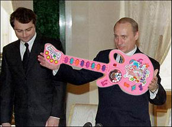

“Великое рок-н-ролльное надувательство-2. Часть третья

Уж так устроены люди, что никогда не избавятся от привычки давать хлесткие характеристики эпохам, векам и десятилетиям. Я тоже человек, и ничто человеческое мне не чуждо. Поэтому, говоря о нулевых годах, я не могу удержаться от искушения назвать феномен, который с полной силой проявился в этот период, не иначе как империя троечников.
Именно в этот период началась резкая смена поколений в правящей элите. Люди, имевшие какой-никакой, но реальный опыт управления в позднесоветский период, начали стремительно вытесняться шушерой, которая в те же годы не была еще допущена ни до чего большего, чем пустая болботня на комсомольских собраниях, перекладыванию секретных папочек с дутыми отчетами в домах дружбы за рубежом и тому подобной мелкобюрократической деятельности. Пятерочники ушли в большую жизнь — желательно нероссийскую, двоечники — полегли костьми на терках и разборках, а вот троечники ждали своего часа — и дождались.
Стоит ли говорить, что это были те же самые парни, с которыми мы уже встречались в начале нашего повествования. Те самые, что воспитывали рокеров в обкомовских кабинетах, писали постановления о работе с рок-клубами, литовали тексты песен. Конечно, теперь уже возмужавшие и окрепшие, избавившиеся даже от призрачной необходимости равняться на идейные предрассудки старших товарищей, зато в совершенстве освоившие искусство русского бригадного бизнеса — бессмысленного и беспощадного. Разумеется, эти люди теперь уже даже и не вспоминали о «проеханном» ими где-то в далекой комсомольской юности роке — их предвыборные кампании проходили не под аккомпанемент гитар, а под грохот терактов и вой установок залпового огня на последних стрелках с недобитой бандитской вольницей, которой предстояло разъяснить, что страну отныне будет крышевать только одна ОПГ.
Не сработала и затея использовать русский рок в качестве точки сборки оппозиционных сил. Сменилась не только политическая элита — сменилось также поколение, из которого вербовались музыканты и их слушатели. На место людей, прошедших школу социализации в брежневские и перестроечные годы и понимавших, говоря словами Дмитрия Быкова, что такое «бесперспективность частной жизни» в тех условиях, воспринимавших свободу, как болезненное, но необходимое условие существования, пришли те, для кого совок несчастливым образом оказался синонимом уютного, внутриутробного детства, а растительное существование без великих потрясений — наилучшим способом бытия. Империи троечников идеальным образом соответствовала музыка троечников, пропагандируемая «Нашим радио». Музыка, которая могла вызвать из всех мыслимых видов бунта разве что какую-нибудь бестолковую ходынку на очередном пивном фестивале с втаптыванием тинэйджерами тинэйджеров в размокшую от дождя подмосковную грязь. Музыка, которой даже вполне реальная трагедия взрыва в Тушино не смогла придать ни грана героического ореола. Потоки унылого бренчания, в котором даже самые талантливые исполнители, вроде Земфиры, все равно звучали лишь как жалкое эхо Жанны Агузаровой или Янки Дягилевой.
Тогда-то и всплыло некогда пущенное Федором Чистяковым в порядке самоиронии словечко «говнорок», только теперь никакой иронии в нем не было — констатация голого медицинского факта.
Уж не знаю, на что рассчитывал спонсор телефонного разговора в мебельном салоне — том самом разговоре, о котором упоминалось несколько выше и с которого и началось «Наше радио» — поддался ли просто буйному полету своей фантазии (в это легко можно поверить, учитывая бесславный финал всех прочих его антикремлевских затей) или же его молодой собеседник, ставший генеральным директором рупора говнорока, сразу же сдал затею с потрохами «кому следует» (ходят и такие слухи), и начал счастливо зарабатывать презренный металл на рискованной, но хлебной должности двойного агента. Но кроме вот это самого жесткого формата (радийного синонима клонирования беспомощности по методике овцы Долли), а также окончательного низведения русского рока в лимб развлечения для социальных лузеров (моя клубно-электронная дочь в тот период увлеченно мне сообщала: «Рокеры — они такие… грязные, стоят целый день в подземном переходе, лузгают семечки, пьют дешевое пиво и курят LM…»), эпоха «Нашего радио» ничем более не прославилась. (Следует, впрочем, отметить, что для империи троечников именно жесткий формат, т.е. вычеркивание всего отклоняющегося от контролируемой посредственности и есть основная метода управления — так что результаты его применения очевидны нынче не только в области музыки.)
Тут, вроде бы, и наступила самая пора забить окончательный осиновый кол в неглубокую могилку усталого Дракулы фон Франкенштейна, известного также как «Русский Рок», если бы очередное заклинание, которое принес с майдана южный ветер, в очередной раз не воскресило дряхлое чудовище.
VI
Паника, охватившая кремлевскую элиту после осенне-зимних украинских событий 2004 года, была бесстыдно откровенной. Как известно в 1949 году тогдашний министр обороны Джеймс Форрестол выбросился из окна с криком «Русские идут!» Так вот зимой 2005 года складывалось впечатление, что если бы в Кремле (или на Старой площади) появилась большая группа строительных рабочих в оранжевых тужурках, из окон административных зданий посыпались бы, словно на картине Магритта, самоубийцы в дорогих костюмах. Сейчас уже не столь важно, откуда исходила та паническая волна — с самого ли верха или же ее искусно поднимала политтехнологическая братва, предвкушая распил денег, выделенных на борьбу с «оранжевой угрозой» — важно, что волна поднялась. А тут еще — очень ко времени — и «льготные волнения», которые напомнили обитателям Пентаграммы о том, что народ может однажды оторваться от созерцания Петросяна и стать субъектом реальной политики.
Неважно и то, что (как заметили многие трезвые аналитики) Майдан был скорее специфическим украинским римейком августа 1991-го, чем пророчеством будущих кремлевских бед — у страха, как известно, глаза велики. Так или иначе, началось тревожное вглядывание в оранжевую бездну, в ходе которого не могла не обнаружится серьезная мобилизирующая функция, которую сыграла в период «стояния» популярная музыка. Вот тут-то власть и вспомнила впервые за долгое время про этот «дурацкий рок», который, оказывается, может что-то сделать и сейчас, а не только в те стародавние, ушедшие обкомовские времена.
Мысль власти определялась тупым бандитским прагматизмом: раз Сердючка не помогла Януковичу, а Вакарчук помог Ющенко — вакарчуки должны стать нашими (поскольку сердючки таковыми являются по определению — точнее, по факту выплаты гонорара) Комсомолец (и гебешник) как дрессированный медведь умеет делать только то, чему его однажды учили. Память услужливо подсказала решение: нужно срочно организовать кремлевский рок-клуб.
Нельзя сказать, что буквально всех туда пришлось затаскивать силком — некоторые стареющие рокеры, чувствуя поредение слушателей и уменьшение гонораров, рвались к престолу сами. В частности, Борис Борисович Гребенщиков — большой любитель Кремля и карамели, незадолго до этого награжденный орденом «За заслуги перед Отечеством» IV степени.
Очевидцы утверждают, что «посол рок-н-ролла» ждал от «неритмичной страны» гораздо большего — звания народного артиста или там Госпремии. Но в день юбилея ему принесли в гримерку обидное наградное свидетельство и небольшой белый конверт без опознавательных знаков. Открыв влажными от волнения пальцами конверт, юбиляр обнаружил в нем фото, на котором где-то в недрах лондонского ресторана его обнимал за пьяные плечи Борис Абрамыч Березовский, а Ахмед Халидович Закаев подливал в стакан виски. Наивный автор «Поезда в огне» имел теперь дело не с возвышенным полковником Васиным, а с мелкими мафиози, взращенными на Марио Пьюзо и на бессмертной максиме «Мы помним все и редко прощаем».
Так или иначе жалкие остатки «легенд русского рока» удалось к весне 2005 — кого посулами, кого угрозами — стащить перед светлые очи Владислава Суркова на анекдотическое совещание, по которому впоследствии не прошелся только ленивый. Встреча помощника вождя с мастерами искусств в сухом остатке свелась к двум историческим решениям: созданием продюсерского центра на площади Ильича и обещанием установить квоту на радио и телевидении на ротацию русского рока в ущерб попсе. Второе решение к счастью так и не было выполнено (тут Большая Политика столкнулась с единственным более значимым, чем она сама, фактором в РФ — Большим Баблом). Центр же начал свое бесславное существование. Очень скоро выяснилось, что никто из музыкантов, кроме разве уж совсем молодых и совсем продажных, не желает подписывать странный контракт, в котором одним из пунктов стоит неучастие в концертах и мероприятиях, не одобренных продюсерским центром. Причем вовсе не из-за высокой идейности, а из простого понимания, чем такая кабала светит в долговременной перспективе.
Без работы, впрочем, центр не остался. Кроме снабжения слетов нашистов и младоросов халявными концертами звезд за государственный — то есть, за наш с вами — счет, у него нашлась еще одна достойная задача.
Следует понимать, что в глубине своей птичьей душонки комсомольские цыплята всегда подсознательно завидовали рокерам. Еще бы! Это отребье оттягивалось в полный рост, пока они большим коллективным Молчалиным изображали умеренность и аккуратность в приемных партийных дедушек-Фамусовых. И, разумеется, девчонки — по крайней мере, самые симпатичные и отвязные — смотрели ясно в чью сторону. Теперь, когда все бентли скуплены, все яхты отремонтированы и все бабки вывезены в оффшор, можно, наконец, зализать вечную, гноящуюся рану всех троечников — посредственность.
Я звоню своему старому другу-продюссеру. Звоню я ему редко, говорить-то почти не о чем.
– Ну как там, у вас, закончили сводить Славин альбом?
– Да, закончили.
– И чем же теперь занимаетесь?
– Как чем? Снимаем клип для Джохан.
– Ни хрена себе! Так вы скоро дойдете и до того, что у вас и Сам запоет…
(Смех)
– Кто знает, кто знает. Не исключено любое развитие событий.
Пока этого вроде бы не случилось. А жаль. Это было бы логическим завершением истории русского рока.
Я так и представляю себе нервничающего Владимир Владимировича перед выходом на сцену: опрокинута рюмка текилы, вдут паровоз, всосана последняя дорожка. По плечу дебютанта похлопывает другой Владимир Владимирович — Шахрин.
– Не робей, Вова, прорвемся! Все это рок-н-ролл!
Седой Кинчев, из кармана куртки которого то и дело высовывает любопытную головку дьякон Кураев, довольно улыбается — ведь Президент будет петь сегодня именно его песню. Только вот как быть с неудобными строчками:
– Ну конечно, мы все педерасты,
Наркоманы, фашисты, шпана.
Как один социально опасны
И по каждому плачет тюрьма… ?
Кинчев тревожно смотрит на Президента. Но тот только загадочно улыбается: у него в кармане лежит клочок бумаги, на котором рукой то ли Шевчука, то ли Гребенщикова написано:
– Ну конечно мы все элита,
Патриоты, спортсмены, гламур
Как сказал однажды Конкин Никита
«Юганскнефтегаз — мон амур!»
Раздается рев публики. Вокалист, зажмурившись, делает шаг из-за кулисы и идет к микрофону. Он открывает глаза и ужас охватывает его. Рев публики был записан на пленку, заранее подготовленную Добродеевым и Эрнстом.
Зал пуст.
Впрочем, зрители все равно не увидят этого по телевизору.
Эпилог
Как это не банально звучит, у любого явления искусства есть две стороны и две истории. Одна соответствует его метафизической сущности и обращена к вечности. Другая обращена к своему времени и соответствует сущности политической.
Политическая история русского рока по преимуществу завершена, так же как завершилась парой десятилетий раньше политическая история рока западного. Явление искусства не может долго служить точкой сборки социальных чаяний: так рок-н-ролл в западном мире еще долгое время оставался символом незавершенных революций шестидесятых. А потом выяснилось, что символ мертв — монстра рока выгрызли изнутри мыши шоу-бизнеса и термиты MTV.
Примерно то же самое случилось и с русским роком, как только окончательно исчерпал свою инерцию импульс ожиданий, сформированный в 1980-е. В этом случае обыкновенно остаточную символическую ценность пытаются присвоить себе носители противоположного дискурса, а сами создатели смысла эволюционируют en masse традиционным путем — от бунтарей к охранителям. Это случалось неоднократно в прошлом, это случится еще не раз в будущем.
Люди, прикрывающие ладонью зевок на какой-нибудь современной постановке «Эрнани», могут только недоумевать, каким образом эта запутанная разбойничья история послужила детонатором к июльской революции 1830 года и окончательному падению дома Бурбонов. Разумеется, это не мешало политическим троечникам во все времена — в попытках внести смысл в свою бессмысленную власть — хвататься за устаревшие орудия культурной войны, не понимая того, что порох в них отсырел. Ведь им просто не по силам предугадать ту новую точку, в которой общественная эмоция начинает вызревать в кристалл мобилизующего смысла — иначе они были бы революционерами.
http://www.apn.ru/publications/article10053.htm
На сегодняшний день ясно только одно — точка эта не имеет никакого отношения к русскому року. Потому что снаряд никогда не попадает дважды в одну воронку.
Метафизическая же история русского рока продолжается и будет продолжаться, пока на Земле остается хоть один человек, у которого будут звучать в сердце песни чужой молодости.
июнь-июль 2006